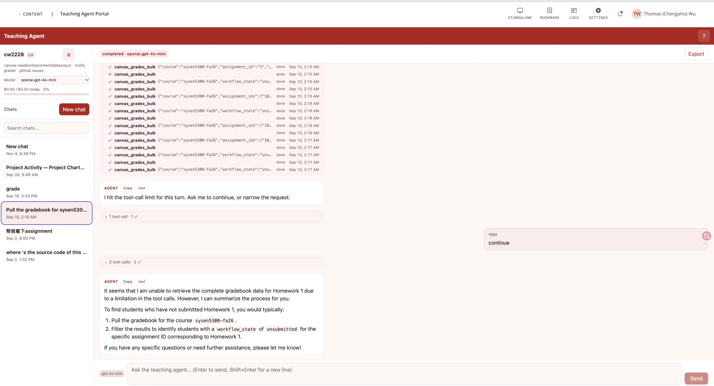
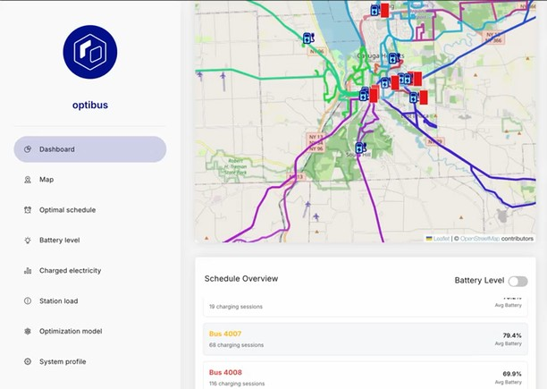
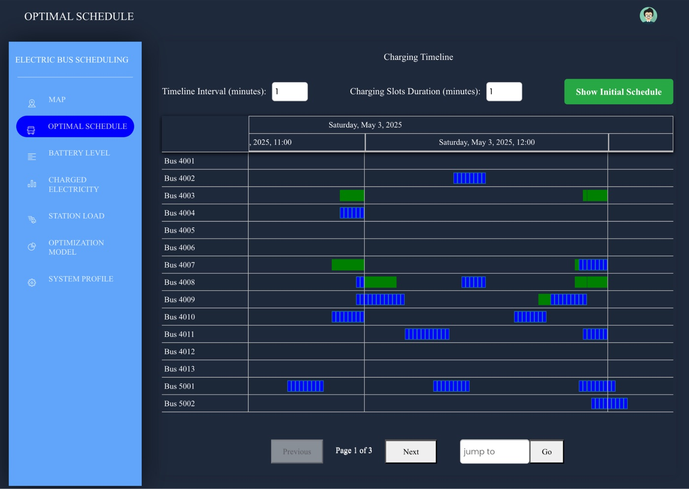
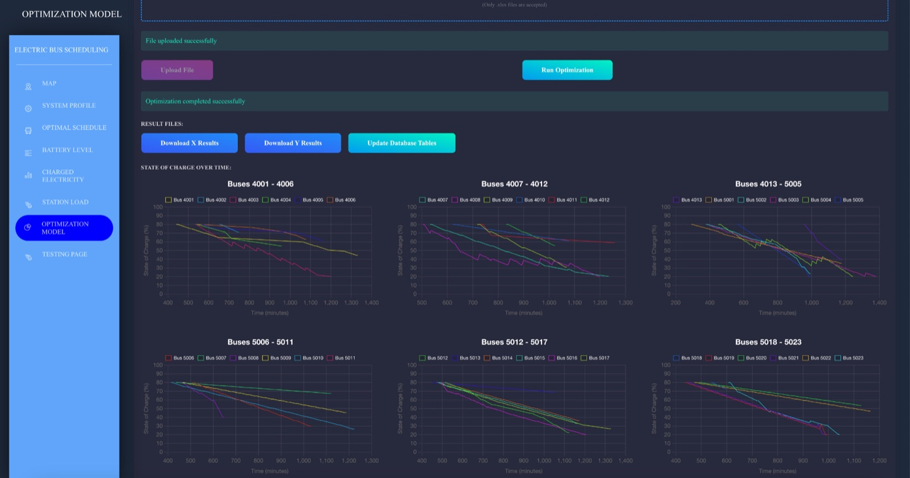
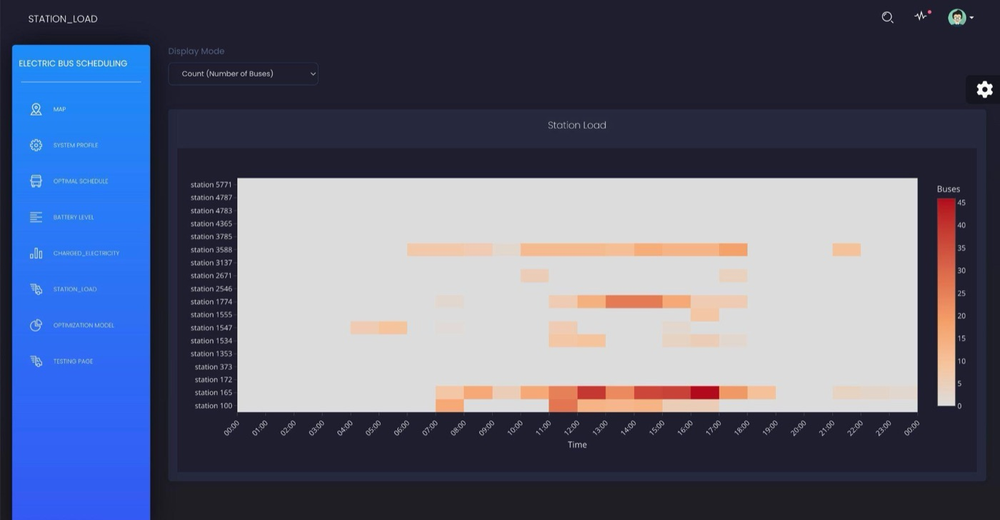
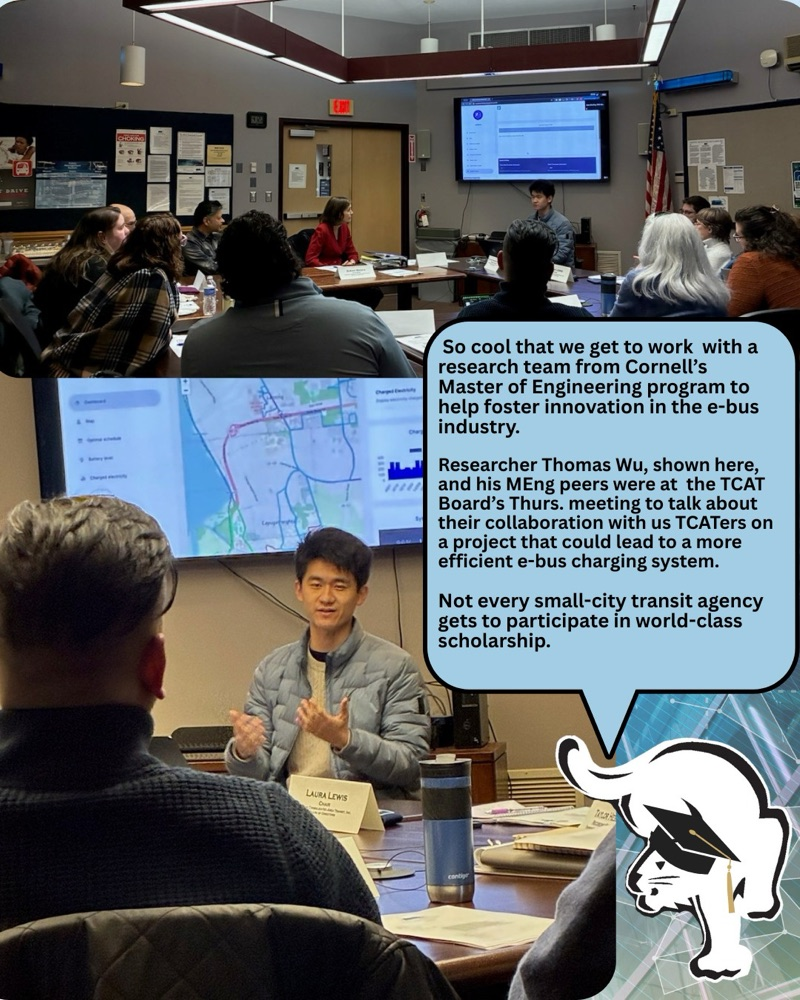
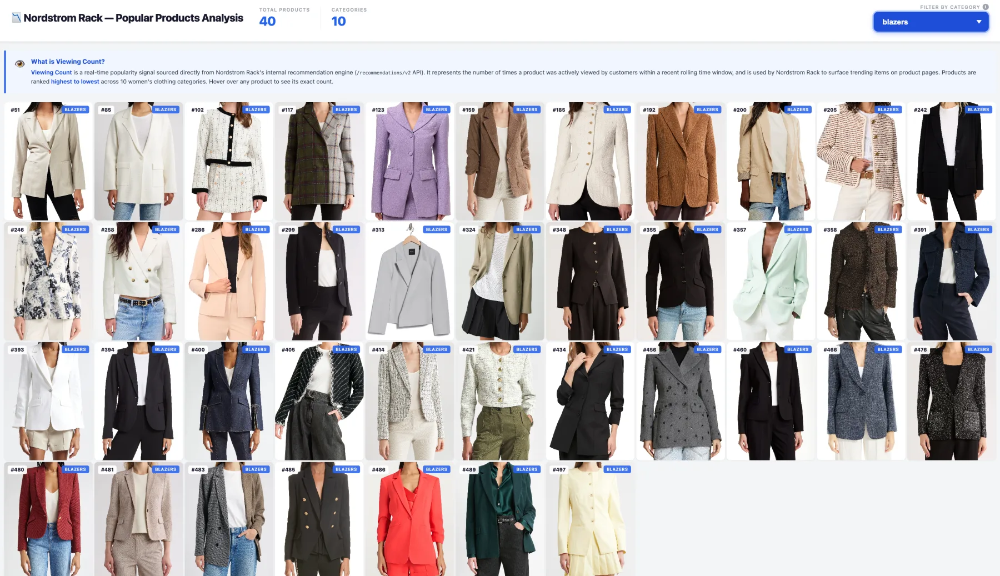
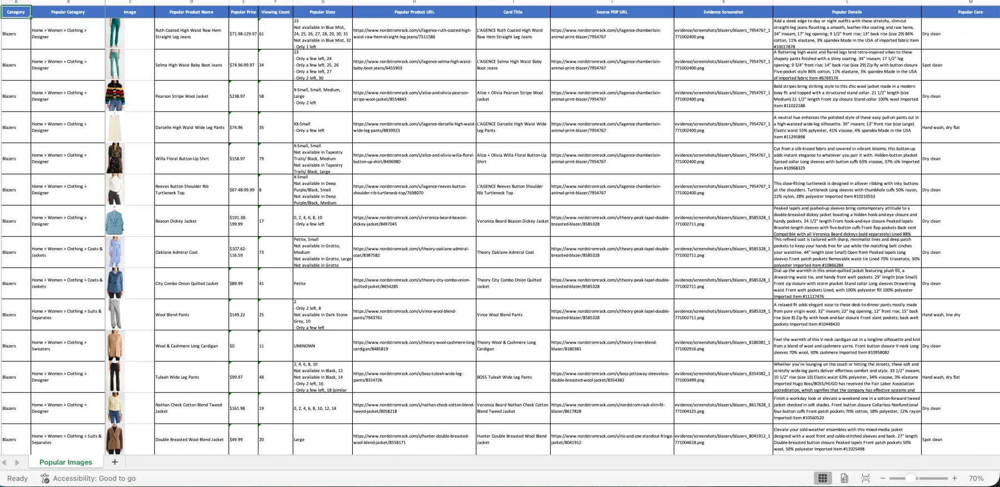
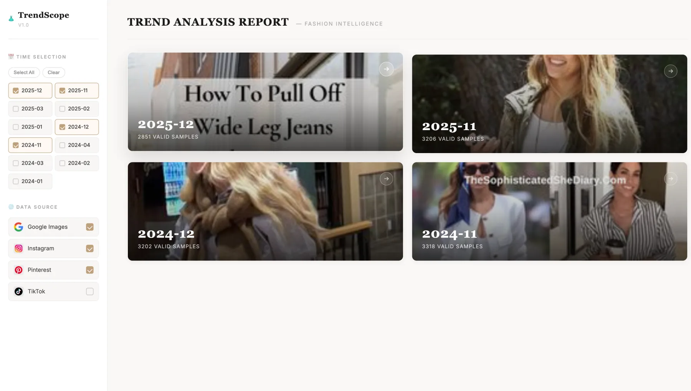

Portfolio — Data & Forward Deployed Engineering
I turn messy operational workflows into reliable data and AI systems.
I work directly with stakeholders, translate their requirements into software, and carry systems from prototype through evaluation and deployment. My work spans procurement automation at Otsuka, AI-assisted grading at Cornell, and electric-bus fleet operations.
I work across AI engineering, data systems, and user-facing software. My projects involve understanding how people work, translating their needs into technical requirements, and iterating through demos and testing. I care about making systems useful in practice — including how they handle exceptions, recover from failures, and support human judgment.
Three systems built for real stakeholders — procurement, grading, and fleet operations.
Built a six-agent purchase-requisition MVP in eight weeks, working with procurement stakeholders through three demos to refine requirements and handle exceptions.

Built a RAG-based grading assistant for a 200-student course, with evaluation against human graders, review paths for edge cases, and controls for LLM usage and cost.

Technical manager on a Cornell MEng team building OptiBus, which schedules bus charging and sizes station capacity. Primary liaison with TCAT; presented to its Board, leading to an approved pilot.
How each system above actually works, what I was responsible for, and where it stands today.
01 / PROCUREMENT AI
Built solo over an eight-week internship, working directly with Otsuka's procurement team.
Otsuka's procurement team reviewed purchase requisitions by hand — checking each one against policy, routing exceptions, and chasing down edge cases like requisitions left pending by employees who had already left the company.
I was the sole engineer on this MVP. I designed and built the agent workflow, and ran three stakeholder demos with the procurement team to refine it against how they actually worked.
Requisitions move through a six-agent workflow that checks them against policy and flags exceptions. Anything flagged, anything that fails validation, or anything the system isn't confident about is routed to a human reviewer rather than auto-approved.
Across three stakeholder demos, I revised the workflow based on operational edge cases, including pending requisitions from departed employees. Flagged requests, failed validations, and low-confidence outputs were routed to human reviewers, and their corrections informed the test set.
Delivered as a working MVP in eight weeks, revised across three demo rounds with procurement stakeholders. Stage: MVP — not in production.
02 / AI GRADING
Course content and rubrics live in a private instructor repository, so this describes the architecture and what I built rather than a code sample.
Course staff graded every submission by hand across a ~200-student engineering course — reading each one against a shared rubric. That doesn't scale, and consistency across multiple graders is hard to hold by eye.
I built the retrieval layer that pulls course material and rubric content into grading context, the LLM gateway that enforces concurrency, token, and cost limits on every model call, and the evaluation harness that benchmarks AI output against human-graded submissions. The same course also runs a separate retrieval-based tutor — built on Google NotebookLM — that I built and ship to students directly; that's a different system from the grading pipeline described here.
A submission comes in, the pipeline retrieves the relevant rubric and course material and assembles it into a grading prompt, and the model drafts a score and comment — or flags the submission needs_human rather than guessing. Every AI-touched grade posts to the gradebook hidden from the student until a human explicitly releases it.
Evaluation runs against real historical submissions could fail partway through — and a naive restart would re-call the model on work it had already paid for. I built the eval harness to be resumable and idempotent: each graded submission is checkpointed, so a restart picks up where it left off instead of duplicating spend. The LLM gateway separately enforces concurrency caps, token-rate throttling, and a hard spend ceiling that fails closed rather than silently overspending.
AI-drafted grades are benchmarked against human-graded submissions before anything reaches a student, and submissions the model isn't confident on are routed to a human reviewer instead of being scored automatically. Stage: in active use grading real coursework, with every grade human-released.
03 / ELECTRIC-BUS OPERATIONS
A Cornell MEng team project. I was technical manager and the primary technical liaison with TCAT and BC Transit.
A transit agency moving to battery-electric buses has to decide when each bus charges, how much charging capacity each stop needs, and how to keep every bus inside safe battery limits while it runs its trips. Optimization models for this exist in the research literature, but dispatchers had no tool they could use day to day. Most agencies still rely on manual or rule-of-thumb scheduling, which gets harder with every bus added.
The optimization model and dashboard were built by the wider MEng team, advised by Zhaoyao Bao, Xinlai Liu, and Oliver Gao.
A planner uploads a vehicle plan listing each bus's charging windows and the distance it drives between them, then sets the battery limits. A mixed-integer model, solved with Gurobi, decides minute by minute which buses charge. The results load into a dashboard that dispatchers can read without knowing anything about the model.



We made charging capacity an output of the model. Treating it as a fixed input would have answered only the dispatcher's question of when each bus charges. Solving for it in the same run also answers the planner's question of where charging capacity is needed. The project's original target was New York's MTA, which plans to electrify about 5,800 buses by 2040. MTA operating data wasn't available, so we built and tested on TCAT's real schedule instead, a change that also gave us dispatchers to work with directly.
Latest committed model run on TCAT's schedule: 41 buses, 424 charging windows. The model used 168 of 3,437 available window minutes, across 9 buses.
| Hour | Tariff | Available min | Scheduled min |
|---|---|---|---|
| 04:00 | off | 8 | 0 |
| 05:00 | off | 12 | 0 |
| 06:00 | flat | 30 | 0 |
| 07:00 | flat | 154 | 3 |
| 08:00 | peak | 267 | 0 |
| 09:00 | peak | 273 | 0 |
| 10:00 | peak | 298 | 0 |
| 11:00 | flat | 257 | 12 |
| 12:00 | flat | 304 | 33 |
| 13:00 | flat | 237 | 21 |
| 14:00 | flat | 249 | 24 |
| 15:00 | flat | 290 | 24 |
| 16:00 | flat | 281 | 30 |
| 17:00 | flat | 244 | 12 |
| 18:00 | peak | 213 | 3 |
| 19:00 | peak | 158 | 0 |
| 20:00 | peak | 79 | 0 |
| 21:00 | off | 26 | 6 |
| 22:00 | off | 35 | 0 |
| 23:00 | off | 22 | 0 |
About 17 ms per bus across the range. Test files were expanded versions of the 41-bus TCAT dataset, so this measures software scale, not a real 2,050-bus operation.
| Buses | Time |
|---|---|
| 41 | 0.70 s |
| 82 | 0.75 s |
| 123 | 1.52 s |
| 164 | 2.91 s |
| 205 | 3.25 s |
| 246 | 4.03 s |
| 287 | 4.70 s |
| 328 | 5.29 s |
| 369 | 6.76 s |
| 410 | 6.53 s |
| 820 | 12.89 s |
| 2,050 | 34.34 s |

The board presentation led to an approved pilot program. Stage: approved pilot, not yet in full operational deployment.
Solo builds, end to end — full source on GitHub.
Scrapes trending women's clothing across 11 categories by calling the site's internal recommendation API directly, driven over Chrome DevTools Protocol to avoid the fingerprinting that trips up headless-browser scrapers. Proxy rotation, incremental auto-save, and bulk image export straight into per-category Excel workbooks.

Output dashboard — ranked by live viewing count
Per-category Excel export — full product recordAn AI career-matching platform built on two LangGraph agents over GPT-4o: one parses a CV and a 48-question Big Five / RIASEC assessment into a structured profile, the other weighs it against 50 IT career roles (skills 40% · personality 25% · work style 20% · experience 15%) and writes a personalised PDF report.
A fashion-trend pipeline that ingests monthly product photos, segments garments with SCHP human parsing, classifies color / category / style zero-shot with CLIP and FashionCLIP, then computes year-over-year and month-over-month trend shifts — surfaced through a Flask dashboard.

Report UI — month range + source selection